In this homework we learn about realistic lighting via race tracing and different methods of sampling to achieve better quality. We explore methods like BVH to speed up our rendering and adaptive sampling to produce noise free images. Finally, we achieve visual richness by recursively collecting light from bounces.
Part 1: Ray Generation and Scene Intersection
Ray generation starts on the image plane where we generate some number of rays per pixel to determine the pixel value. But how do you shoot a ray from a pixel into the 3D camera space? Given the pixel coordinates some math can be applied to find the equivalent sensor location on the camera. Finally, the direction of the ray can be calculated by finding the vector of the camera origin to the sensor value. With that, a valid ray can be formed!
Pixel to Sensor. Source: HW3 Part 1
To know if a ray hits anything, all scene objects must be looped over and test in their specific way if the ray intersects. For triangles Moller-Trumbore can be used where after you calculate the edges and points shifted in barycentric coordinates the parameters t, b1, and b2. So long as the following conditions are true there is a valid intersection at t!
t >= 0 0 <= b1 0 <= b2 <= 1 0 <= 1 - b1 - b2 <= 1
Data like normal and BSDF is saved to the ray if there is an intersection so the ray can report what color it contributed to the pixel. Since the ray might be tested against other primitives, the t of which the intersection happened is saved so only the closest object intersection is saved.
As a result the following images can be rendered!
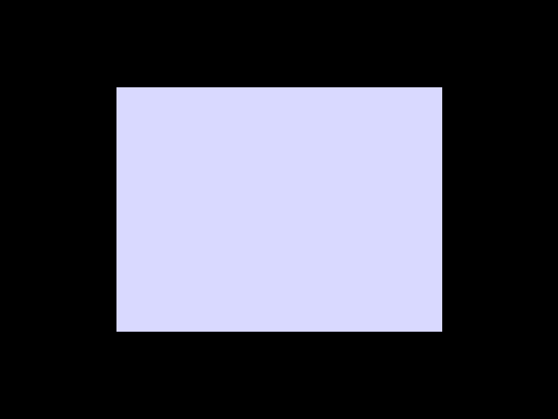
Scene Plane
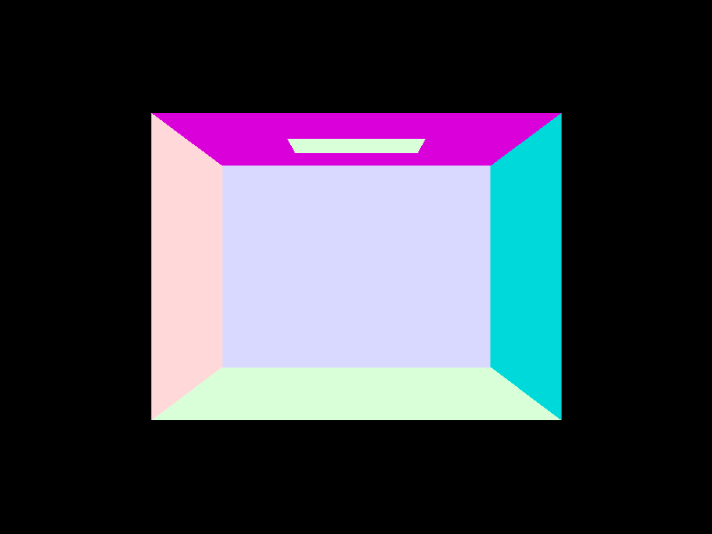
Scene CBempty
Scene CBspheres
Part 2: Bounding Volume Hierarchy
BVH construction starts with a box that encompasses all the primitives tightly. Then a quick check is made to see if the number of primitives is equal to or less than the max_leaf_size, if so the node is complete and returned. Otherwise, it is split on a heuristic and recursively called on the resulting 2 halves. The heuristic we chose was splitting on the largest spread defined by bbox.max - bbox.min and splitting on the average centroid of the primitives.
As a result, the BVH scenes with tons of geometry could now be rendered blazingly fast. Maxplanck who has 10s of thousands of triangles saw a __ and CBlucy who has 100s of thousands of triangles saw __. This shows that BVH becomes increasingly more useful as the geometry gets more and more complex.
Direct lighting includes 0 bounce which is light that directly comes from the light source to the camera and 1 bounce which as the name implies all the light that bounces once off the scene into the camera. The first way this is implemented is via uniform hemisphere lighting, where a light ray hits a point in the scene and some sample test bounce rays are uniformly shot out and see if they intersect a light. If so, the light is contributed to the ray hit, if not no contribution. This immediately causes issues when you don't sample enough as it's possible to never hit a light even though the light would reach the point. This causes a lot of noise, which leads us to the solution of importance sampling.
By knowing where the lights are in the scene we can choose to sample only in that direction with shadow rays. If the shadow-ray hits the light it contributes, if a different object than the light, it contributes no light. These samples are averaged which provides a nice smooth soft shadow and greatly reduces noise by reducing the chance of light never being samples.
Code Implementation
In code, hemisphere sampling is implemented by a loop of num_samples which is the number of lights times light sampling rate parameter. In each iteration, we sample via hemisphere a ray direction and use the point hit as the origin. If the ray hits, we add to the light output using the BSDF and emission weighted by cos theta divided by the PDF. The light is divided by the number of samples at the end so it is averaged. For importance sampling, the only difference is we instead loop over the lights in the scene and cast some number of shadow rays directly toward the light.
Result
Below compares hemisphere and importance sampling. The first set of images shows varying sampling amounts while keeping the light sample fixed at 1. Immediately importance sampling can produce a fairly good image with only 1 sample while hemisphere sampling is nearly black from missing the light. The next set of images of the dragon shows a varying number of light samples. The crevices of the dragon produce shadows that are way too dark when only sampling 1 light. However, as the number of samples reaches 64 there is a nice soft shadow that isn't so binary. In summary, importance sampling can get better results with fewer samples and can create soft shadows so long as there is enough light sampling.
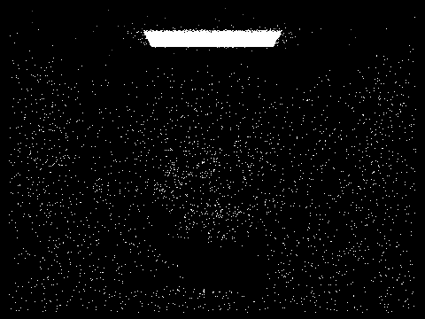
Dragon Hemisphere -l 1 -s 1
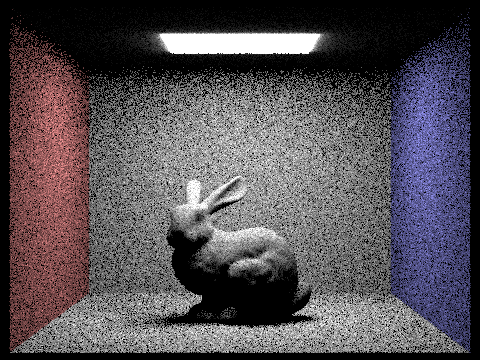
Dragon Hemisphere -l 4 -s 16
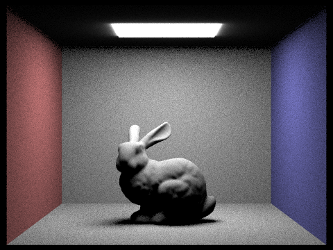
Dragon Hemisphere -l 8 -s 64
Dragon Importance -l 1 -s 1
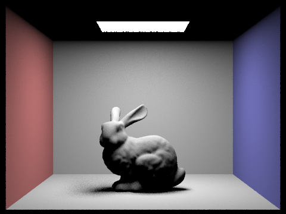
Dragon Importance -l 4 -s 16
Dragon Importance -l 8 -s 64
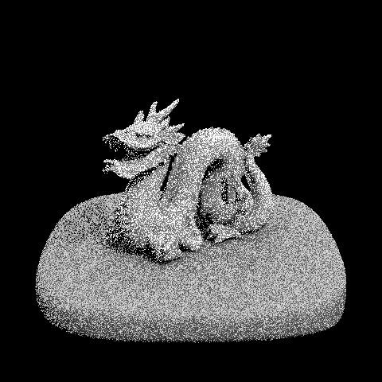
Dragon -l 1 -s 1
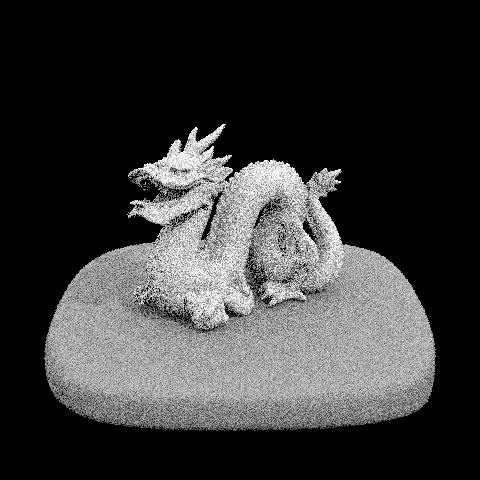
Dragon -l 4 -s 1
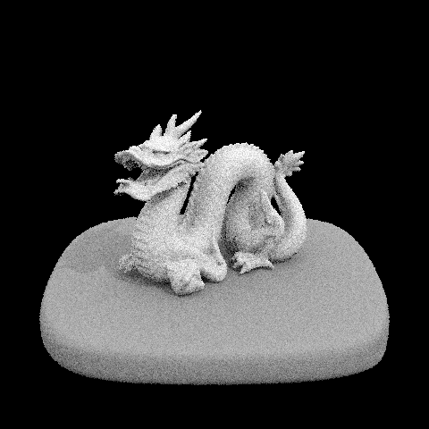
Dragon -l 8 -s 1
Dragon -l 64 -s 1
Part 4: Global Illumination
Indirect lighting is a continuation of part 3 where now we integrate 2+ bounces of light with the aim of getting visual richness. To do this the at_least_one_bounce_radiance was modified to be recursive so it would accumulate light every bounce. With every bounce, the ray's depth tracker would increment down (who started at max_ray_depth) until it reached 0 which was the base case, and returned out. This was the formula to figure out the bounce contribution:
Inside est_radiance_global_illumination both the 0 bounce and recursive call added together produced the final result of global illumination!
Global Illumination (Both Direct and Indirect)
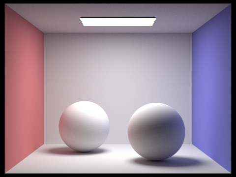
Spheres -m 5 -l 16 -s 1024
Bench -m 5 -l 16 -s 1024
Only Direct vs Only Indirect
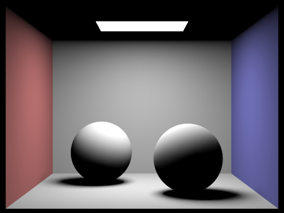
Spheres -m 1 -l 1 -s 1024
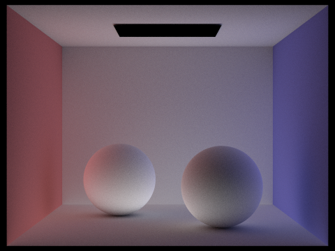
Spheres -m 5 -l 1 -s 1024. Note the code was edited to ignore bounce 0 and 1.
Accumulate vs Unaccumulate
Below are the accumulated and unaccumulated (light from a specific bounce) of the bunny scene. For the accumulated, notice that the 2nd bounce of light allows the ceiling to be lit up that is otherwise unreachable from 1 bounce. With 3 bounces and above you can start to see the smooth color bleed from the wall into the wall and rabbit adding much visual richness to the otherwise plain colors. You can observe where this effect is coming from by looking at the unaccumulated versions of the image.
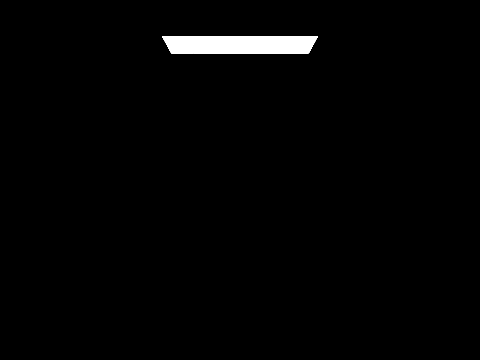
Bunny -m 0 -l 1 -s 1024
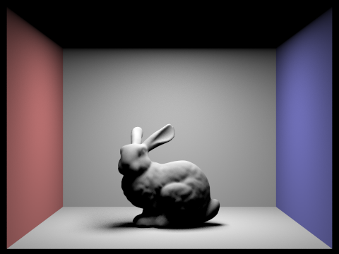
Bunny -m 1 -l 4 -s 1024
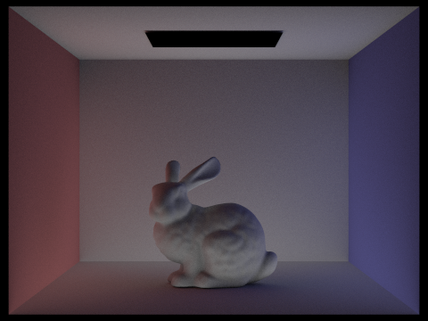
Bunny -m 2 -l 8 -s 1024
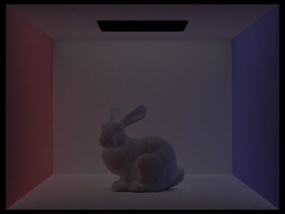
Bunny -m 3 -l 64 -s 1024
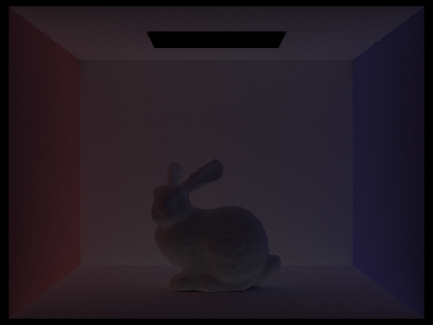
Bunny -m 4 -l 64 -s 1024
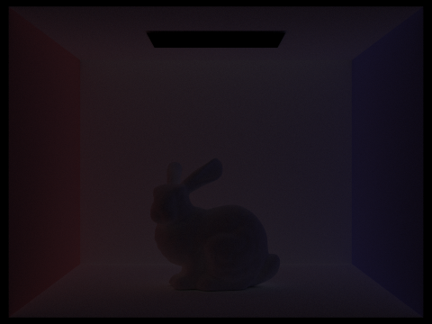
Bunny -m 5 -l 64 -s 1024
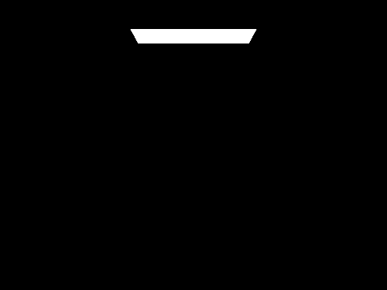
Bunny -m 0 -l 1 -s 1024
Bunny -m 1 -l 4 -s 1024
Bunny -m 2 -l 8 -s 1024
Bunny -m 3 -l 64 -s 1024
Bunny -m 4 -l 64 -s 1024
Bunny -m 5 -l 64 -s 1024
Russian Roulette
We opted to use 30% chance of termination.
Bunny -m 0 -l 1 -s 1024
Bunny -m 1 -l 1 -s 1024
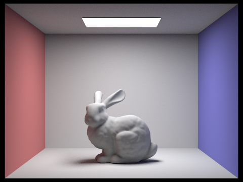
Bunny -m 2 -l 1 -s 1024
Bunny -m 3 -l 1 -s 1024
Bunny -m 4 -l 1 -s 1024
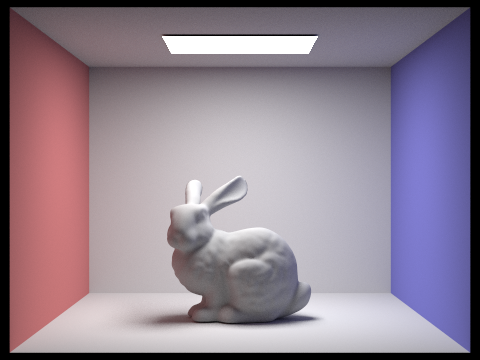
Bunny -m 5 -l 1 -s 1024
Various sample-per-pixel rate with fixed 4 ray sampling.
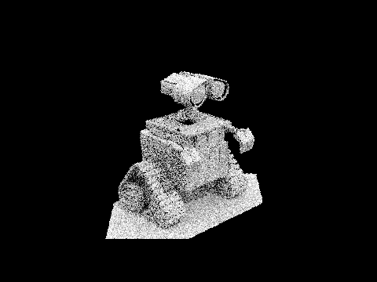
Wall-e -s 1 -l 5 -m5
Wall-e -s 2 -l 5 -m5
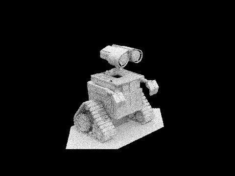
Wall-e -s 4 -l 5 -m5
Wall-e -s 8 -l 5 -m5
Wall-e -s 16 -l 5 -m5
Wall-e -s 64 -l 5 -m5
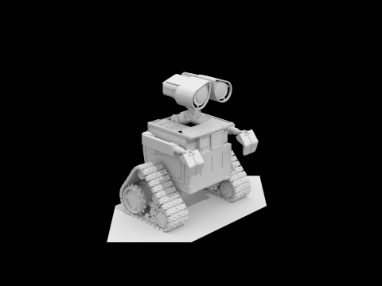
Wall-e -s 1024 -l 5 -m5
Part 5: Adaptive Sampling
Rendering can be very noise-dependent on the number of samples we choose per pixel. However, when a pixel is no longer changing much from the additional sample, there will be no more noise, and is safe to move on. Adaptive sampling achieves this by creating a confidence interval and tracking the mean and varience of a pixel. Once within the 95% confidence zone, the pixel is complete.
To implement this in code the loop inside raytrace_pixel was modified to track the mean and variance and the interval progress was checked every batch number (a parameter). Once it passed this formula, the pixel was complete:
The rate and noise-free images can be seen below. Notice the number of samples needed for convergence changes a lot throughout the scene. For example, the walls were quite stable, but the complex geometry of the bunny took longer to converge.